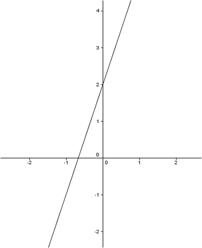
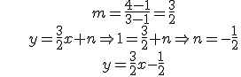

Funciones.Interpolación
Funciones afines
Una función es afín si tiene esta expresión algebraica: y = f(x) = mx + n (m,n є R), con un polinomio de grado 0 o 1.
Su gráfica es una recta, donde m se llama pendiente y n ordenada en el origen.
• Si m > 0 la función es creciente
• Si m < 0 la función es decreciente
Ejemplo: f(x) = 3x + 2
3 es la pendiente y 2 es la ordenada en origen

Si tenemos o bien 2 puntos o un punto y la pendiente de una función afín, podemos encontrar su expresión algebraica.
Con dos puntos, calculamos m como la tasa de variación media en ese intervalo y obtenemos n sustituyendo un punto en la fórmula.
Con un punto y la pendiente, obtenemos n como antes.
Ejemplo: si tenemos dos puntos (1,1) y (3,4):

Ejercicio. Averigua la ecuación de la recta que:
a) pasa por los puntos (1,1) y (3,3)
b) pasa por el (1,0) y tiene pendiente -2
Soluciones: a) y = x; b) y = -2x + 2
Obra publicada con Licencia Creative Commons Reconocimiento No comercial Compartir igual 3.0